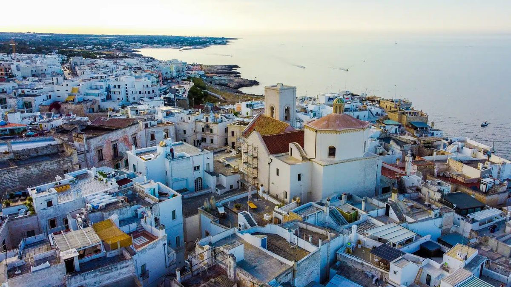

Day 4 — Drive to Puglia + Mass in Polignano
Sunday, May 24, 2026

PLACES & MAP LINKS — tap any place to open in Google Maps
🚗 BMW pickup — 9:30 AM — 📍 Rental Car — Via Giovanni Giolitti 34, Rome
South side of Termini (Via Giovanni Giolitti 34). BMW 5 Series Touring. Bring IDP + license.
🏨 Hotel arrival — ~3:30-4:00 PM — 📍 Borgobianco Resort & Spa
Direct booking. Breakfast + 60-min daily spa + parking included.
⛪ Mass — 7:30 PM — 📍 Chiesa Matrice Santa Maria Assunta
Piazza Vittorio Emanuele 21. Pending parish confirmation.
🅿️ Parking — 📍 Parcheggio Pino Pascali (Polignano)
Main parking lot for Polignano old town. ~5 min walk to Chiesa Matrice.
🍴 Dinner — 9:00 PM — 📍 La Locanda Porta Picc
Via Anemone 34/36. Outside table (heat lamps available). Wheelchair OK.
SIDE QUESTS
⚡ 📍 Descend to Lama Monachile cove (Rob & Maddison only)
Stairs go down to the famous pebble cove between cliffs. Rob/Maddison descend, parents wait at the bridge taking photos. Return to the same spot.
CONTACTS
Borgobianco — Giada: +39 080 214 9060
Chiesa Matrice parish: +39 080 424 0124
La Locanda Porta Picc: +39 388 194 5973
NOTES
- Aleph van transfer 8:45 AM → Termini Via Giolitti 34. ZTL off Sundays. Arrive ~9:00 AM for 9:30 pickup.
- Photograph BMW all panels at pickup. Confirm Telepass + diesel/petrol.
- Direct drive south with one autogrill stop. Depart Termini ~10:00 AM, arrive Borgobianco ~3:00-3:30 PM.
- Bring light jacket/sweater — outside dinner table, evenings can be cool.
- Park at Pino Pascali for both Mass and dinner. Both walking distance.